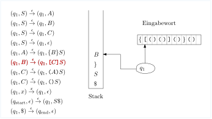

6.2 Kontextfreie Grammatiken und Kellerautomaten./wly/06/02-cfg-to-pda.wly:2:5
Theorem 6.2.1./wly/06/02-cfg-to-pda.wly:4:6 ./wly/06/02-cfg-to-pda.wly:4:22 Zu jeder kontextfreien Grammatik./wly/06/02-cfg-to-pda.wly:5:9 ./wly/06/02-cfg-to-pda.wly:6:9$G = (\Sigma, N, S, P)$ gibt es einen Kellerautomaten./wly/06/02-cfg-to-pda.wly:6:32 ./wly/06/02-cfg-to-pda.wly:7:9$M = (\Sigma, Q, \Gamma, \qstart, \delta)$,./wly/06/02-cfg-to-pda.wly:7:51 der die./wly/06/02-cfg-to-pda.wly:7:51 gleiche Sprache akzeptiert, also ./wly/06/02-cfg-to-pda.wly:8:9$L(G) = L(M)$../wly/06/02-cfg-to-pda.wly:8:55
Beweis../wly/ ./wly/ Der Beweis ist vergleichsweise einfach, weil wir die./wly/06/02-cfg-to-pda.wly:11:9 Grammatik eins zu eins in Automatentransitionen./wly/06/02-cfg-to-pda.wly:12:9 übersetzen können. Die Idee ist, dass die Symbole auf./wly/06/02-cfg-to-pda.wly:13:9 dem Stack, von unten nach oben gelesen, zu jedem./wly/06/02-cfg-to-pda.wly:14:9 Zeitpunkt eine Wortform bilden, aus der der noch nicht./wly/06/02-cfg-to-pda.wly:15:9 gelesene Teil des Restwortes ableitbar ist. Wenn oben./wly/06/02-cfg-to-pda.wly:16:9 auf dem Stack also ein Terminalsymbol ./wly/06/02-cfg-to-pda.wly:17:9$x$ liegt und./wly/06/02-cfg-to-pda.wly:17:50 ./wly/06/02-cfg-to-pda.wly:18:9$x$ auch das nächste Inputzeichen ist, dann poppen./wly/06/02-cfg-to-pda.wly:18:12 wir ./wly/06/02-cfg-to-pda.wly:19:9$x$ vom Stack und lesen ./wly/06/02-cfg-to-pda.wly:19:16$x$,./wly/06/02-cfg-to-pda.wly:19:40 d.h. schieben den./wly/06/02-cfg-to-pda.wly:19:40 Lesekopf um ein Zeichen nach rechts; der Stack ist von./wly/06/02-cfg-to-pda.wly:20:9 ./wly/06/02-cfg-to-pda.wly:21:9$x \alpha$ auf ./wly/06/02-cfg-to-pda.wly:21:19$\alpha$ geschruft und das Restwort./wly/06/02-cfg-to-pda.wly:21:32 von ./wly/06/02-cfg-to-pda.wly:22:9$xw$ auf ./wly/06/02-cfg-to-pda.wly:22:17$w$;./wly/06/02-cfg-to-pda.wly:22:25 wenn also ./wly/06/02-cfg-to-pda.wly:22:25$x\alpha \Rightarrow^* xw$ ./wly/06/02-cfg-to-pda.wly:22:63 galt, so gilt nun immer noch ./wly/06/02-cfg-to-pda.wly:23:9$\alpha \Rightarrow^* w$../wly/06/02-cfg-to-pda.wly:23:62 ./wly/06/02-cfg-to-pda.wly:23:62 Wenn ein Nichtterminal ./wly/06/02-cfg-to-pda.wly:24:9$X$ oben auf dem Stack liegt,./wly/06/02-cfg-to-pda.wly:24:35 dieser also die Form ./wly/06/02-cfg-to-pda.wly:25:9$X \alpha$ hat, und ./wly/06/02-cfg-to-pda.wly:25:40$w$ das./wly/06/02-cfg-to-pda.wly:25:53 Restwort ist, dann gilt also./wly/06/02-cfg-to-pda.wly:26:9 ./wly/06/02-cfg-to-pda.wly:27:9$X \alpha \Rightarrow^* w$../wly/06/02-cfg-to-pda.wly:27:35 Der Automat rät nun./wly/06/02-cfg-to-pda.wly:27:35 nichtdeterministisch die erste in der Ableitung./wly/06/02-cfg-to-pda.wly:28:9 angewandte Produktion ./wly/06/02-cfg-to-pda.wly:29:9$X \rightarrow \beta$,./wly/06/02-cfg-to-pda.wly:29:52 löscht./wly/06/02-cfg-to-pda.wly:29:52 ./wly/06/02-cfg-to-pda.wly:30:9$X$ vom Stack und pusht ./wly/06/02-cfg-to-pda.wly:30:12$\beta$../wly/06/02-cfg-to-pda.wly:30:40 Der Stack ist nun./wly/06/02-cfg-to-pda.wly:30:40 ./wly/06/02-cfg-to-pda.wly:31:9$\beta \alpha$,./wly/06/02-cfg-to-pda.wly:31:23 und ./wly/06/02-cfg-to-pda.wly:31:23$\beta \alpha \Rightarrow^* w$../wly/06/02-cfg-to-pda.wly:31:59 ./wly/06/02-cfg-to-pda.wly:31:59 Entscheidend ist der Nichtdeterminismus: es ./wly/06/02-cfg-to-pda.wly:32:9gibt./wly/06/02-cfg-to-pda.wly:32:54 ./wly/06/02-cfg-to-pda.wly:32:59 eine korrekte Produktion ./wly/06/02-cfg-to-pda.wly:33:9$X \rightarrow \beta$,./wly/06/02-cfg-to-pda.wly:33:55 die./wly/06/02-cfg-to-pda.wly:33:55 schlussendlich zu ./wly/06/02-cfg-to-pda.wly:34:9$w$ führt; der Automat ./wly/06/02-cfg-to-pda.wly:34:30kann./wly/06/02-cfg-to-pda.wly:34:51 also./wly/06/02-cfg-to-pda.wly:34:56 diese Transition anwenden. Formaler: Die Zustände des./wly/06/02-cfg-to-pda.wly:35:9 Automaten sind ./wly/06/02-cfg-to-pda.wly:36:9$Q = \{\qstart, q_1, \qend\}$,./wly/06/02-cfg-to-pda.wly:36:53 das./wly/06/02-cfg-to-pda.wly:36:53 Stackalphabet ist./wly/06/02-cfg-to-pda.wly:37:9 ./wly/06/02-cfg-to-pda.wly:38:9\(\Gamma = \Sigma \cup N \cup \{\$\}\) und die./wly/06/02-cfg-to-pda.wly:38:47 Transitionsregeln sind./wly/06/02-cfg-to-pda.wly:39:9
$$
\begin{align*}
(q_1, x)&\step{x} (q_1, \epsilon) \quad \textnormal{für jedes $x \in \Sigma$}\\
(q_1, A)&\step{\epsilon} (q_1, \beta) \quad \textnormal{für jede Produktion $A \rightarrow
\beta$}\\ \hline
(\qstart, \epsilon)&\step{\epsilon} (q_1, S \$) \\
(q_1, \$)&\step{\epsilon} (\qend, \epsilon)
\end{align*}
$$
Auf einen formalen Beweis, dass ./wly/06/02-cfg-to-pda.wly:49:9$L(M) = L(G)$ ist,./wly/06/02-cfg-to-pda.wly:49:54 verzichte ich an dieser Stelle. Besser als Sipser in./wly/06/02-cfg-to-pda.wly:50:9 seinem Lehrbuch ./wly/06/02-cfg-to-pda.wly:51:9Introduction to the Theory of./wly/06/02-cfg-to-pda.wly:51:26 Computing./wly/06/02-cfg-to-pda.wly:52:9 könnte ich das eh nicht../wly/06/02-cfg-to-pda.wly:52:19A./wly/\(\square\)./wly/
Beispiel 6.2.2./wly/06/02-cfg-to-pda.wly:55:6 ./wly/06/02-cfg-to-pda.wly:55:23 Betrachten wir die Grammatik./wly/06/02-cfg-to-pda.wly:56:9
$$
\begin{align*}
S&\rightarrow A \ | \ B \ | \ C \ | \ \epsilon \\
A&\rightarrow \texttt{\{} B \texttt{\}} S \\
B&\rightarrow \texttt{[} C \texttt{]} S \\
C&\rightarrow \texttt{(} A \texttt{)} S \ | \ \texttt{()}S \\
\end{align*}
$$
Ein Wort in der erzeugten Sprache wäre zum Beispiel./wly/06/02-cfg-to-pda.wly:65:9
./wly/06/02-cfg-to-pda.wly:66:9{./wly/06/02-cfg-to-pda.wly:66:10()()./wly/06/02-cfg-to-pda.wly:66:12}()./wly/06/02-cfg-to-pda.wly:66:19
Schreiben wir nun einen./wly/06/02-cfg-to-pda.wly:66:23
Kellerautomaten, der diese Sprache akzeptiert. Die./wly/06/02-cfg-to-pda.wly:67:9
Idee ist, dass wir Terminalsymbole und./wly/06/02-cfg-to-pda.wly:68:9
Nichtterminalsymbole auf den Stack legen. Ein
./wly/06/02-cfg-to-pda.wly:69:9[./wly/06/02-cfg-to-pda.wly:69:56
oben./wly/06/02-cfg-to-pda.wly:69:58
auf dem Stack bedeutet dann
./wly/06/02-cfg-to-pda.wly:70:9ich will jetzt sofort ein./wly/06/02-cfg-to-pda.wly:70:38
./wly/06/02-cfg-to-pda.wly:71:9[./wly/06/02-cfg-to-pda.wly:71:10lesen./wly/06/02-cfg-to-pda.wly:71:12;./wly/06/02-cfg-to-pda.wly:71:18
ein Nichtterminal wie
./wly/06/02-cfg-to-pda.wly:71:18$A$
oben auf dem./wly/06/02-cfg-to-pda.wly:71:45
Stack bedeutet, dass wir als nächstes ein von
./wly/06/02-cfg-to-pda.wly:72:9$A$
./wly/06/02-cfg-to-pda.wly:72:59
ableitbares Wort, also ein./wly/06/02-cfg-to-pda.wly:73:9
./wly/06/02-cfg-to-pda.wly:74:9$A \rightarrow w \in \Sigma^*$
lesen wollen. Um ein./wly/06/02-cfg-to-pda.wly:74:39
./wly/06/02-cfg-to-pda.wly:75:9$w$
mit
./wly/06/02-cfg-to-pda.wly:75:12$A \rightarrow w$
lesen zu können, müssen wir./wly/06/02-cfg-to-pda.wly:75:34
./wly/06/02-cfg-to-pda.wly:76:9sofort./wly/06/02-cfg-to-pda.wly:76:10
ein
./wly/06/02-cfg-to-pda.wly:76:17{./wly/06/02-cfg-to-pda.wly:76:23
lesen, dann ein Wort
./wly/06/02-cfg-to-pda.wly:76:25$v$
mit./wly/06/02-cfg-to-pda.wly:76:50
./wly/06/02-cfg-to-pda.wly:77:9$B \rightarrow v$,./wly/06/02-cfg-to-pda.wly:77:26
dann ein
./wly/06/02-cfg-to-pda.wly:77:26}./wly/06/02-cfg-to-pda.wly:77:38
und so weiter. Wir./wly/06/02-cfg-to-pda.wly:77:40
können das also im Automaten implementieren, indem wir./wly/06/02-cfg-to-pda.wly:78:9
./wly/06/02-cfg-to-pda.wly:79:9$A$
vom Stack löschen und durch./wly/06/02-cfg-to-pda.wly:79:12
./wly/06/02-cfg-to-pda.wly:80:9$\texttt{\{} B \texttt{\}} S$
auf den Stack legen,./wly/06/02-cfg-to-pda.wly:80:38
mit dem linkesten Symbol zuoberst. Wenn wir für ein./wly/06/02-cfg-to-pda.wly:81:9
Nichtterminal mehrere Regeln haben, also z.B../wly/06/02-cfg-to-pda.wly:82:9
./wly/06/02-cfg-to-pda.wly:83:9$X \rightarrow \alpha$
und
./wly/06/02-cfg-to-pda.wly:83:31$X \rightarrow \beta$,./wly/06/02-cfg-to-pda.wly:83:57
./wly/06/02-cfg-to-pda.wly:83:57
dann können ein
./wly/06/02-cfg-to-pda.wly:84:9$X$
auf dem Stack sowohl durch./wly/06/02-cfg-to-pda.wly:84:28
./wly/06/02-cfg-to-pda.wly:85:9$\alpha$
als auch durch
./wly/06/02-cfg-to-pda.wly:85:17$\beta$
ersetzen. Hierfür./wly/06/02-cfg-to-pda.wly:85:40
benötigen wir den Nichtdeterminismus. Beachten Sie,./wly/06/02-cfg-to-pda.wly:86:9
dass wir ein Nichtterminal grundsätzlich immer durch./wly/06/02-cfg-to-pda.wly:87:9
die entsprechende rechte Seite ersetzen können, egal,./wly/06/02-cfg-to-pda.wly:88:9
was das nächste Zeichen ist; es wird im Automaten also./wly/06/02-cfg-to-pda.wly:89:9
ein
./wly/06/02-cfg-to-pda.wly:90:9$\step{\epsilon}$-Übergang./wly/06/02-cfg-to-pda.wly:90:30
sein. Konkret also./wly/06/02-cfg-to-pda.wly:90:30
bauen wir für obige Grammatik die folgenden./wly/06/02-cfg-to-pda.wly:91:9
Automatentransitionen:./wly/06/02-cfg-to-pda.wly:92:9
$$
\begin{align*}
(q_1, S)&\step{\epsilon} (q_1, A) \\
(q_1, S)&\step{\epsilon} (q_1, B) \\
(q_1, S)&\step{\epsilon} (q_1, C) \\
(q_1, S)&\step{\epsilon} (q_1, \epsilon) \\
\hline
(q_1,A)&\step{\epsilon} (q_1, \texttt{\{} B \texttt{\}} S) \\
\hline
(q_1,B)&\step{\epsilon} (q_1, \texttt{[} C \texttt{]} S) \\
\hline
(q_1,C)&\step{\epsilon} (q_1, \texttt{(} A \texttt{)} S) \\
(q_1,C)&\step{\epsilon} (q_1, \texttt{(} \texttt{)} S) \\
\hline
(q_1,\texttt{\{})&\step{\texttt{\{}} (q_1, \epsilon) \\
(q_1,\texttt{\}})&\step{\texttt{\}}} (q_1, \epsilon) \\
(q_1,\texttt{[})&\step{\texttt{[}} (q_1, \epsilon) \\
(q_1,\texttt{]})&\step{\texttt{]}} (q_1, \epsilon) \\
(q_1,\texttt{(})&\step{\texttt{(}} (q_1, \epsilon) \\
(q_1,\texttt{)})&\step{\texttt{)}} (q_1, \epsilon) \\
\end{align*}
$$
Dies ist völlig mechanisch und benötigt kein./wly/06/02-cfg-to-pda.wly:115:9
Nachdenken. Wie fangen wir an? Wir legen anfangs ein./wly/06/02-cfg-to-pda.wly:116:9
./wly/06/02-cfg-to-pda.wly:117:9$S$
auf den leeren Stack. Wenn dieses
./wly/06/02-cfg-to-pda.wly:117:12$S$
./wly/06/02-cfg-to-pda.wly:117:50
abgearbeitet ist und das Wort zu Ende ist, akzeptieren./wly/06/02-cfg-to-pda.wly:118:9
wir, und nur dann. Um festzustellen, dass wir wirklich./wly/06/02-cfg-to-pda.wly:119:9
den Stack ganz leer gemacht haben, brauchen wir die./wly/06/02-cfg-to-pda.wly:120:9
Markierung
./wly/06/02-cfg-to-pda.wly:121:9$./wly/06/02-cfg-to-pda.wly:121:22../wly/06/02-cfg-to-pda.wly:121:24
Also:./wly/06/02-cfg-to-pda.wly:121:24
$$
\begin{align*}
(\qstart, \epsilon) \step{\epsilon} (q_1, S \$) \\
(q_1, \$) \step{\epsilon} (\qend, \epsilon)
\end{align*}
$$
Unsere Maschine hat also nur drei Zustände: ./wly/06/02-cfg-to-pda.wly:128:9$\qstart$,./wly/06/02-cfg-to-pda.wly:128:62 ./wly/06/02-cfg-to-pda.wly:128:62 ./wly/06/02-cfg-to-pda.wly:129:9$q_1$ und ./wly/06/02-cfg-to-pda.wly:129:14$\qend$,./wly/06/02-cfg-to-pda.wly:129:26 welches der akeptierende./wly/06/02-cfg-to-pda.wly:129:26 Endzustand ist. Beachten Sie, dass es von ./wly/06/02-cfg-to-pda.wly:130:9$\qend$ aus./wly/06/02-cfg-to-pda.wly:130:58 keine ausgehenden Transitionen gibt; sollte es also./wly/06/02-cfg-to-pda.wly:131:9 nach Erreichen von ./wly/06/02-cfg-to-pda.wly:132:9$\qend$ noch weitere Zeichen im./wly/06/02-cfg-to-pda.wly:132:35 Eingabewort geben, so kann der Automat keine weiteren./wly/06/02-cfg-to-pda.wly:133:9 Schritte durchführen, was einem ./wly/06/02-cfg-to-pda.wly:134:9reject./wly/06/02-cfg-to-pda.wly:134:42 entspricht../wly/06/02-cfg-to-pda.wly:134:49 Erreichen des Zustandes ./wly/06/02-cfg-to-pda.wly:135:9$\qend$ führt also nur dann./wly/06/02-cfg-to-pda.wly:135:40 zu einem ./wly/06/02-cfg-to-pda.wly:136:9accept./wly/06/02-cfg-to-pda.wly:136:19,./wly/06/02-cfg-to-pda.wly:136:26 wenn dies am Ende des Wortes./wly/06/02-cfg-to-pda.wly:136:26 geschieht../wly/06/02-cfg-to-pda.wly:137:9
./public/img/context-free/cfg-to-pda/01.svg
 ./public/img/context-free/cfg-to-pda/02.svg
./public/img/context-free/cfg-to-pda/02.svg
./public/img/context-free/cfg-to-pda/03.svg
./public/img/context-free/cfg-to-pda/04.svg
 ./public/img/context-free/cfg-to-pda/05.svg
./public/img/context-free/cfg-to-pda/05.svg
 ./public/img/context-free/cfg-to-pda/06.svg
./public/img/context-free/cfg-to-pda/06.svg
 ./public/img/context-free/cfg-to-pda/07.svg
./public/img/context-free/cfg-to-pda/07.svg
 ./public/img/context-free/cfg-to-pda/08.svg
./public/img/context-free/cfg-to-pda/08.svg
./public/img/context-free/cfg-to-pda/09.svg
 ./public/img/context-free/cfg-to-pda/10.svg
./public/img/context-free/cfg-to-pda/10.svg
./public/img/context-free/cfg-to-pda/11.svg
./public/img/context-free/cfg-to-pda/12.svg
 ./public/img/context-free/cfg-to-pda/13.svg
./public/img/context-free/cfg-to-pda/13.svg
 ./public/img/context-free/cfg-to-pda/14.svg
./public/img/context-free/cfg-to-pda/14.svg
 ./public/img/context-free/cfg-to-pda/15.svg
./public/img/context-free/cfg-to-pda/15.svg
./public/img/context-free/cfg-to-pda/16.svg
 ./public/img/context-free/cfg-to-pda/17.svg
./public/img/context-free/cfg-to-pda/17.svg
 ./public/img/context-free/cfg-to-pda/18.svg
./public/img/context-free/cfg-to-pda/18.svg
 ./public/img/context-free/cfg-to-pda/19.svg
./public/img/context-free/cfg-to-pda/19.svg
 ./public/img/context-free/cfg-to-pda/20.svg
./public/img/context-free/cfg-to-pda/20.svg
 ./public/img/context-free/cfg-to-pda/21.svg
./public/img/context-free/cfg-to-pda/21.svg
./public/img/context-free/cfg-to-pda/22.svg
 ./public/img/context-free/cfg-to-pda/23.svg
./public/img/context-free/cfg-to-pda/23.svg
 ./public/img/context-free/cfg-to-pda/24.svg
./public/img/context-free/cfg-to-pda/24.svg
 ./public/img/context-free/cfg-to-pda/25.svg
./public/img/context-free/cfg-to-pda/25.svg
 ./public/img/context-free/cfg-to-pda/26.svg
./public/img/context-free/cfg-to-pda/26.svg
./public/img/context-free/cfg-to-pda/27.svg
./public/img/context-free/cfg-to-pda/28.svg
 ./public/img/context-free/cfg-to-pda/29.svg
./public/img/context-free/cfg-to-pda/29.svg
 ./public/img/context-free/cfg-to-pda/30.svg
./public/img/context-free/cfg-to-pda/30.svg
 ./public/img/context-free/cfg-to-pda/31.svg
./public/img/context-free/cfg-to-pda/31.svg
./public/img/context-free/cfg-to-pda/32.svg
./public/img/context-free/cfg-to-pda/33.svg
 ./public/img/context-free/cfg-to-pda/34.svg
./public/img/context-free/cfg-to-pda/34.svg
 ./public/img/context-free/cfg-to-pda/35.svg
./public/img/context-free/cfg-to-pda/35.svg
 ./public/img/context-free/cfg-to-pda/36.svg
./public/img/context-free/cfg-to-pda/36.svg
./public/img/context-free/cfg-to-pda/37.svg
./public/img/context-free/cfg-to-pda/38.svg
 ./public/img/context-free/cfg-to-pda/39.svg
./public/img/context-free/cfg-to-pda/39.svg
 ./public/img/context-free/cfg-to-pda/40.svg
./public/img/context-free/cfg-to-pda/40.svg
./public/img/context-free/cfg-to-pda/41.svg
 ./public/img/context-free/cfg-to-pda/42.svg
./public/img/context-free/cfg-to-pda/42.svg
 ./public/img/context-free/cfg-to-pda/43.svg
./public/img/context-free/cfg-to-pda/43.svg
 ./public/img/context-free/cfg-to-pda/44.svg
./public/img/context-free/cfg-to-pda/44.svg
 ./public/img/context-free/cfg-to-pda/45.svg
./public/img/context-free/cfg-to-pda/45.svg
 ./public/img/context-free/cfg-to-pda/46.svg
./public/img/context-free/cfg-to-pda/46.svg
./public/img/context-free/cfg-to-pda/47.svg
 ./public/img/context-free/cfg-to-pda/48.svg
./public/img/context-free/cfg-to-pda/48.svg
 ./public/img/context-free/cfg-to-pda/49.svg
./public/img/context-free/cfg-to-pda/49.svg
./public/img/context-free/cfg-to-pda/50.svg
 ./public/img/context-free/cfg-to-pda/51.svg
./public/img/context-free/cfg-to-pda/51.svg
 ./public/img/context-free/cfg-to-pda/52.svg
./public/img/context-free/cfg-to-pda/52.svg
 ./public/img/context-free/cfg-to-pda/53.svg
./public/img/context-free/cfg-to-pda/53.svg
Die Gegenrichtung ist schwieriger../wly/06/02-cfg-to-pda.wly:195:5
Theorem 6.2.3./wly/06/02-cfg-to-pda.wly:197:6 ./wly/06/02-cfg-to-pda.wly:197:22 Zu jedem Kellerautomaten ./wly/06/02-cfg-to-pda.wly:198:9$M$ gibt es eine./wly/06/02-cfg-to-pda.wly:198:37 kontextfreie Grammatik ./wly/06/02-cfg-to-pda.wly:199:9$G$ mit ./wly/06/02-cfg-to-pda.wly:199:35$L(M) = L(G)$../wly/06/02-cfg-to-pda.wly:199:53
Ich folge hier im Wesentlichen dem Beweis aus Sipsers./wly/06/02-cfg-to-pda.wly:201:5 Kapitel 2../wly/06/02-cfg-to-pda.wly:202:5
Beweis../wly/ ./wly/ Sei ./wly/06/02-cfg-to-pda.wly:205:9$M = (\Sigma, Q, \Gamma, \qstart, F, \delta)$ der./wly/06/02-cfg-to-pda.wly:205:58 Kellerautomat. Als erstes führen wir drei./wly/06/02-cfg-to-pda.wly:206:9 Schönheitsoperation durch:./wly/06/02-cfg-to-pda.wly:207:9
-
Der Automat hat einen einzigen akzeptierenden Zustand./wly/06/02-cfg-to-pda.wly:211:17 ./wly/06/02-cfg-to-pda.wly:212:17$\qend$../wly/06/02-cfg-to-pda.wly:212:24 Dies können wir einfach durch ./wly/06/02-cfg-to-pda.wly:212:24$\epsilon$ ./wly/06/02-cfg-to-pda.wly:212:66 -Übergänge erreichen../wly/06/02-cfg-to-pda.wly:213:17
-
Der Automat leert den Stack, bevor er akzeptiert../wly/06/02-cfg-to-pda.wly:216:17 Dies können wir z.B. dadurch erreichen, dass wir./wly/06/02-cfg-to-pda.wly:217:17 anfangs ein ./wly/06/02-cfg-to-pda.wly:218:17\(\$\) auf den Stack legen und am Ende./wly/06/02-cfg-to-pda.wly:218:35 den Stack poppen, bis wir ./wly/06/02-cfg-to-pda.wly:219:17\(\$\) gepoppt haben../wly/06/02-cfg-to-pda.wly:219:49
-
Für jede Transition./wly/06/02-cfg-to-pda.wly:222:17
$$ \begin{align*} (p, x) \step{a} (q, y) \end{align*} $$ist genau eines von ./wly/06/02-cfg-to-pda.wly:228:17$x,y$ leer (und das andere ist./wly/06/02-cfg-to-pda.wly:228:42 genau ein Stacksymbol aus ./wly/06/02-cfg-to-pda.wly:229:17$\Gamma$)../wly/06/02-cfg-to-pda.wly:229:51 Eine Transition./wly/06/02-cfg-to-pda.wly:229:51 der Form ./wly/06/02-cfg-to-pda.wly:230:17$(p, \epsilon) \step{a} (q, x)$ nennen wir./wly/06/02-cfg-to-pda.wly:230:57 eine ./wly/06/02-cfg-to-pda.wly:231:17Push-Operation./wly/06/02-cfg-to-pda.wly:231:23,./wly/06/02-cfg-to-pda.wly:231:38 eine der Form./wly/06/02-cfg-to-pda.wly:231:38 ./wly/06/02-cfg-to-pda.wly:232:17$(p, y) \step{a} (q, \epsilon)$ nennen wir eine./wly/06/02-cfg-to-pda.wly:232:48 ./wly/06/02-cfg-to-pda.wly:233:17Pop-Operation./wly/06/02-cfg-to-pda.wly:233:18../wly/06/02-cfg-to-pda.wly:233:32 Der Automat kann in diese Form./wly/06/02-cfg-to-pda.wly:233:32 gebracht werden, indem wir Zwischenzustände einführen:./wly/06/02-cfg-to-pda.wly:234:17
$$ \begin{align*} (p, x) \step{a} (q, y) \textnormal { wird ersetzt durch die zwei Transitionen } (p, x) \step{a} (p', \epsilon) \textnormal { und }(p', \epsilon) \step{a} (q, y) \\ (p, \epsilon) \step{a} (q,\epsilon) \textnormal { wird ersetzt durch die zwei Transitionen } (p, \epsilon) \step{a} (p', \bigstar) \textnormal { und }(p', \bigstar) \step{a} (q, \epsilon) \ . \end{align*} $$Im zweiten Falle pushen wir also pro Forma ein./wly/06/02-cfg-to-pda.wly:245:17 ansonsten irrelevantes Symbol ./wly/06/02-cfg-to-pda.wly:246:17$\bigstar$ auf den./wly/06/02-cfg-to-pda.wly:246:57 Stack, um es gleich darauf runterzupoppen../wly/06/02-cfg-to-pda.wly:247:17
Wenn nun der Automat die eben beschriebene Form hat,./wly/06/02-cfg-to-pda.wly:249:9 so ist die Idee, dass wir für jedes Paar ./wly/06/02-cfg-to-pda.wly:250:9$p,q$ von./wly/06/02-cfg-to-pda.wly:250:55 Zuständen ein Nichtterminalsymbol ./wly/06/02-cfg-to-pda.wly:251:9$A_{pq}$ einführen,./wly/06/02-cfg-to-pda.wly:251:51 dass genau die Wörter ./wly/06/02-cfg-to-pda.wly:252:9$w$ ableiten kann, für die./wly/06/02-cfg-to-pda.wly:252:34
$$
\begin{align*}
(p, \epsilon) \Step{w}^* (q,\epsilon)
\end{align*}
$$
gilt, die also den Automaten von ./wly/06/02-cfg-to-pda.wly:258:9$p$ nach ./wly/06/02-cfg-to-pda.wly:258:45$q$ bringen./wly/06/02-cfg-to-pda.wly:258:54 können, wobei der Stack am Anfang und am Ende leer./wly/06/02-cfg-to-pda.wly:259:9 ist. Dies kann auf zwei Weisen geschehen:./wly/06/02-cfg-to-pda.wly:260:9
-
Fall 1: in der Konfigurationsfolge von./wly/06/02-cfg-to-pda.wly:264:17 ./wly/06/02-cfg-to-pda.wly:265:17$(p, \epsilon) \Step{w}^* (q,\epsilon)$ wird der./wly/06/02-cfg-to-pda.wly:265:56 Stack zwischendurch auch mal leer, und zwar nachdem./wly/06/02-cfg-to-pda.wly:266:17 der Präfix ./wly/06/02-cfg-to-pda.wly:267:17$u$ des Wortes ./wly/06/02-cfg-to-pda.wly:267:31$w = uv$ gelesen ist, und./wly/06/02-cfg-to-pda.wly:267:51 der Automat ist zu diesem Zeitpunkt im Zustand ./wly/06/02-cfg-to-pda.wly:268:17$r$../wly/06/02-cfg-to-pda.wly:268:67 ./wly/06/02-cfg-to-pda.wly:268:67 Also:./wly/06/02-cfg-to-pda.wly:269:17
$$ \begin{align*} (p, \epsilon) \Step{u}^* (r,\epsilon) \Step{v}^* (q,\epsilon) \ . \end{align*} $$Es sollte also (wenn unsere Konstruktion erfolgreich./wly/06/02-cfg-to-pda.wly:275:17 ist) gelten, dass ./wly/06/02-cfg-to-pda.wly:276:17$A_{pr} \Rightarrow^* u$ und./wly/06/02-cfg-to-pda.wly:276:59 ./wly/06/02-cfg-to-pda.wly:277:17$A_{rq} \Rightarrow^* v$../wly/06/02-cfg-to-pda.wly:277:41 Wir führen daher die./wly/06/02-cfg-to-pda.wly:277:41 Grammatikproduktion./wly/06/02-cfg-to-pda.wly:278:17
$$ \begin{align*} A_{pq} \rightarrow A_{pr} A_{rq} \end{align*} $$ein../wly/06/02-cfg-to-pda.wly:284:17
-
Fall 2: in der Konfigurationsfolge von./wly/06/02-cfg-to-pda.wly:287:17 ./wly/06/02-cfg-to-pda.wly:288:17$(p, \epsilon) \Step{w}^* (q,\epsilon)$ ist der Stack./wly/06/02-cfg-to-pda.wly:288:56 zwischendurch nie leer. Das heißt wiederum, dass das./wly/06/02-cfg-to-pda.wly:289:17 im ersten Schritt gepushte Stacksymbol ./wly/06/02-cfg-to-pda.wly:290:17$x$ am Ende./wly/06/02-cfg-to-pda.wly:290:59 gepoppt wird, also ./wly/06/02-cfg-to-pda.wly:291:17$w = avb$ mit./wly/06/02-cfg-to-pda.wly:291:45
$$ \begin{align*} (p, \epsilon) \step{a} (r, x) \Step{v}^* (s,x) \step{b} (q,\epsilon) \end{align*} $$Hier ist wichtig zu wissen, dass die erste Operation./wly/06/02-cfg-to-pda.wly:297:17 eine Push-Operation sein muss: Pop kann sie eh nicht./wly/06/02-cfg-to-pda.wly:298:17 sein, und die Möglichkeit./wly/06/02-cfg-to-pda.wly:299:17 ./wly/06/02-cfg-to-pda.wly:300:17$(p,\epsilon) \step{a} (r, \epsilon)$ haben wir durch./wly/06/02-cfg-to-pda.wly:300:54 unsere Schönheitsoperationen ausgeschlossen. Des./wly/06/02-cfg-to-pda.wly:301:17 weiteren ist zu beachten, dass in der./wly/06/02-cfg-to-pda.wly:302:17 Konfigurationsfolge von ./wly/06/02-cfg-to-pda.wly:303:17$(r, x) \Step{v}^* (s,x)$ der./wly/06/02-cfg-to-pda.wly:303:66 Stack nie leer wird. Keine Transition "liest" also das./wly/06/02-cfg-to-pda.wly:304:17 unterste Zeichen ./wly/06/02-cfg-to-pda.wly:305:17$x$ -- denn dann müsste nacha./wly/06/02-cfg-to-pda.wly:305:37 Schönheitsoperation das ./wly/06/02-cfg-to-pda.wly:306:17$x$ ja gepoppt werden und der./wly/06/02-cfg-to-pda.wly:306:44 Stack würde vollständig geleert. In anderen Worten:./wly/06/02-cfg-to-pda.wly:307:17 die Konfigurationsfolge wäre auch dann gültig, wenn./wly/06/02-cfg-to-pda.wly:308:17 Anfangs- und Endstack nicht ./wly/06/02-cfg-to-pda.wly:309:17$[x]$ sondern ./wly/06/02-cfg-to-pda.wly:309:50$\epsilon$,./wly/06/02-cfg-to-pda.wly:309:69 ./wly/06/02-cfg-to-pda.wly:309:69 also der leere Stack wäre:./wly/06/02-cfg-to-pda.wly:310:17
$$ \begin{align*} (r, \epsilon) \Step{v}^* (s,\epsilon) \ . \end{align*} $$Wenn unsere Konstruktion Erfolg hat, hieße das also./wly/06/02-cfg-to-pda.wly:316:17 ./wly/06/02-cfg-to-pda.wly:317:17$A_{rs} \Rightarrow^* v$ und somit ist./wly/06/02-cfg-to-pda.wly:317:41
$$ \begin{align*} A_{pq} \rightarrow a A_{rs} b \end{align*} $$eine gültige Regel../wly/06/02-cfg-to-pda.wly:323:17
Schlussendlich führen wir noch die offensichtlich./wly/06/02-cfg-to-pda.wly:325:9 korrekten Regeln ./wly/06/02-cfg-to-pda.wly:326:9$A_pp \rightarrow \epsilon$ ein, da./wly/06/02-cfg-to-pda.wly:326:53 ja ./wly/06/02-cfg-to-pda.wly:327:9$(p, \epsilon) \Step{\epsilon}^* (p, \epsilon)$ ./wly/06/02-cfg-to-pda.wly:327:59 offensichtlich gilt (da ja ./wly/06/02-cfg-to-pda.wly:328:9$\Step{}^*$ auch die aus./wly/06/02-cfg-to-pda.wly:328:47 null Übergangen bestehende Konfigurationsfolge./wly/06/02-cfg-to-pda.wly:329:9 erlaubt). Zusammenfassend gesagt besteht unsere./wly/06/02-cfg-to-pda.wly:330:9 Grammatik ./wly/06/02-cfg-to-pda.wly:331:9$G$ aus drei unterschiedlichen Typen von./wly/06/02-cfg-to-pda.wly:331:22 Regeln:./wly/06/02-cfg-to-pda.wly:332:9
$$
\begin{align*}
A_{pp}&\rightarrow \epsilon \textnormal{ für jeden Zustand \(p \in Q\)} \\
A_{pq}&\rightarrow A_{pr}A_{rq} \textnormal{ für alle Zustände $p,q,r \in Q$} \\
A_{pq}&\rightarrow a A_{rs} b \textnormal{ für alle Pushp-Pop-Paare
$(p,\epsilon) \step{a} (r,x)$, $(s,x) \step{b} (q,\epsilon)$ von Transitionen}
\end{align*}
$$
Das Startsymbol der Grammatik ist natürlich./wly/06/02-cfg-to-pda.wly:341:9 ./wly/06/02-cfg-to-pda.wly:342:9$A_{\qstart, \qend}$../wly/06/02-cfg-to-pda.wly:342:29 Auch hier verzichte ich auf./wly/06/02-cfg-to-pda.wly:342:29 einen formalen Beweis, dass ./wly/06/02-cfg-to-pda.wly:343:9$L(G)=L(M)$ gilt. Der./wly/06/02-cfg-to-pda.wly:343:48 Beweis verwendet (wenig überraschend) Induktion über./wly/06/02-cfg-to-pda.wly:344:9 die Länge der Ableitung bzw. Induktion über die Länge./wly/06/02-cfg-to-pda.wly:345:9 der Konfigurationsfolge und ist in Sipsers Lehrbuch im./wly/06/02-cfg-to-pda.wly:346:9 Detail erklärt../wly/06/02-cfg-to-pda.wly:347:9A./wly/\(\square\)./wly/
Beispiel 6.2.4./wly/06/02-cfg-to-pda.wly:350:6 ./wly/06/02-cfg-to-pda.wly:350:23 Wir betrachten die Sprache./wly/06/02-cfg-to-pda.wly:351:9
$$
\begin{align*}
a^m b (a|b)^* b a^m
\end{align*}
$$
Diese ist ./wly/06/02-cfg-to-pda.wly:357:9nicht./wly/06/02-cfg-to-pda.wly:357:20 regulär, da der Präfix und der./wly/06/02-cfg-to-pda.wly:357:26 Suffix aus ./wly/06/02-cfg-to-pda.wly:358:9$a$ die gleiche Länge ./wly/06/02-cfg-to-pda.wly:358:23$m$ haben müssen../wly/06/02-cfg-to-pda.wly:358:45 Wir bauen zuerst einen Kellerautomaten und übersetzen./wly/06/02-cfg-to-pda.wly:359:9 den dann entsprechend dem Schema aus dem letzten./wly/06/02-cfg-to-pda.wly:360:9 Theorem in eine Grammatik. Dann vergleichen wir die./wly/06/02-cfg-to-pda.wly:361:9 entstandene Grammatik mit der, die wir per Hand aus./wly/06/02-cfg-to-pda.wly:362:9 der obigen Sprachbeschreibung bauen würden. Unser./wly/06/02-cfg-to-pda.wly:363:9 Automat hat einen Zustand ./wly/06/02-cfg-to-pda.wly:364:9$q_1$,./wly/06/02-cfg-to-pda.wly:364:40 in welchem er./wly/06/02-cfg-to-pda.wly:364:40 führenden ./wly/06/02-cfg-to-pda.wly:365:9$a$ 's auf den Stack legt und einen Zustand./wly/06/02-cfg-to-pda.wly:365:22 ./wly/06/02-cfg-to-pda.wly:366:9$q_3$,./wly/06/02-cfg-to-pda.wly:366:14 in welchem er die ./wly/06/02-cfg-to-pda.wly:366:14$a$'s./wly/06/02-cfg-to-pda.wly:366:37 am Ende liest und vom./wly/06/02-cfg-to-pda.wly:366:37 Stack poppt. Zwischen den beiden ./wly/06/02-cfg-to-pda.wly:367:9$b$'s./wly/06/02-cfg-to-pda.wly:367:45 in der Mitte./wly/06/02-cfg-to-pda.wly:367:45 ist er in einem Zustand ./wly/06/02-cfg-to-pda.wly:368:9$q_2$,./wly/06/02-cfg-to-pda.wly:368:38 in welchem er die./wly/06/02-cfg-to-pda.wly:368:38 Eingabesymbole mehr oder weniger ignoriert. Der./wly/06/02-cfg-to-pda.wly:369:9 Automat muss nichtdeterministisch sein, da er./wly/06/02-cfg-to-pda.wly:370:9 "erraten" muss, welches ./wly/06/02-cfg-to-pda.wly:371:9$b$ das letzte ist, weil er./wly/06/02-cfg-to-pda.wly:371:36 dann mit dem Stack-Poppen beginnen muss../wly/06/02-cfg-to-pda.wly:372:9
$$
\begin{align*}
(\qstart, \epsilon)&\step{\epsilon} (q_1, \$) \\ \hline
(q_1, \epsilon)&\step{a} (q_1, a) \\
(q_1, \epsilon)&\step{b} (q_2, b) \\
\textcolor{red}{(q_2, \epsilon)}&\textcolor{red}{ \step{a} (q_2, \epsilon)} \\
\textcolor{red}{(q_2, \epsilon)}&\textcolor{red}{ \step{b} (q_2, \epsilon)} \\
(q_2, b)&\step{b} (q_3, \epsilon) \\
(q_3, a)&\step{a} (q_3, \epsilon) \\ \hline
(q_3, \$)&\step{\epsilon} (\qend, \epsilon)
\end{align*}
$$
Die beiden rot gefärbten Transitionen benötigen eine./wly/06/02-cfg-to-pda.wly:385:9
Schönheitsoperation:./wly/06/02-cfg-to-pda.wly:386:9
$$
\begin{align*}
(q_2, \epsilon)&\step{a} (q'_2, x) \\
(q_2, \epsilon)&\step{b} (q'_2, x) \\
(q'_2, x)&\step{\epsilon} (q_2, \epsilon) \\
\end{align*}
$$
Unsere Zustandsmenge ist also./wly/06/02-cfg-to-pda.wly:394:9
./wly/06/02-cfg-to-pda.wly:395:9$Q = \{\qstart, q_1, q_2, q'_2, q_3, \qend\}$../wly/06/02-cfg-to-pda.wly:395:54
Rein./wly/06/02-cfg-to-pda.wly:395:54
theoretisch müssten wir nun für alle Tripel
./wly/06/02-cfg-to-pda.wly:396:9$p,r,q$
./wly/06/02-cfg-to-pda.wly:396:60
von Zuständen eine Produktion./wly/06/02-cfg-to-pda.wly:397:9
./wly/06/02-cfg-to-pda.wly:398:9$A_{pq} \rightarrow A_{pr} A_{rq}$
einführen, also./wly/06/02-cfg-to-pda.wly:398:43
allein hierfür schon
./wly/06/02-cfg-to-pda.wly:399:9$5^3 = 125$
Produktionen. Wir./wly/06/02-cfg-to-pda.wly:399:41
können das reduzieren, indem wir die im Beweis./wly/06/02-cfg-to-pda.wly:400:9
beschriebene mechanische Prozedur mit ein wenig./wly/06/02-cfg-to-pda.wly:401:9
selbständigem Denken kombinieren. Die erste./wly/06/02-cfg-to-pda.wly:402:9
Beobachtung ist, dass wir gar nicht von jedem Zustand./wly/06/02-cfg-to-pda.wly:403:9
zu jedem kommen können, sondern nur "vorwärts", also./wly/06/02-cfg-to-pda.wly:404:9
wie in diesem Diagramm:./wly/06/02-cfg-to-pda.wly:405:9
 ./public/img/context-free/pda-to-cfg-diagram.svg
./public/img/context-free/pda-to-cfg-diagram.svg
Nichtterminale wie ./wly/06/02-cfg-to-pda.wly:412:9$A_{31}$ führen wir also gar nicht./wly/06/02-cfg-to-pda.wly:412:36 erst ein. Auch schreiben wir ./wly/06/02-cfg-to-pda.wly:413:9$A_{13}$ statt./wly/06/02-cfg-to-pda.wly:413:46 ./wly/06/02-cfg-to-pda.wly:414:9$A_{q_1q_3}$ und verwenden die Indizes 0 für ./wly/06/02-cfg-to-pda.wly:414:21$\qstart$ ./wly/06/02-cfg-to-pda.wly:414:63 und 4 für ./wly/06/02-cfg-to-pda.wly:415:9$\qend$../wly/06/02-cfg-to-pda.wly:415:26 Als zweite Beobachtung sehen wir,./wly/06/02-cfg-to-pda.wly:415:26 dass man mit leerem Stapel beispielsweise gar nicht./wly/06/02-cfg-to-pda.wly:416:9 von ./wly/06/02-cfg-to-pda.wly:417:9$\qstart$ nach ./wly/06/02-cfg-to-pda.wly:417:22$q_3$ kommt: auf dem Weg dorthin./wly/06/02-cfg-to-pda.wly:417:33 wird ein ./wly/06/02-cfg-to-pda.wly:418:9\(\$\) gepusht und nie gepoppt; gleiches./wly/06/02-cfg-to-pda.wly:418:24 gilt für viele weitere Zustandspaare. Das erweiterte./wly/06/02-cfg-to-pda.wly:419:9 Diagramm hier gibt eine Orientierung. Neben jeden./wly/06/02-cfg-to-pda.wly:420:9 Zustand haben wir schematisch den Stack gemalt:./wly/06/02-cfg-to-pda.wly:421:9
Die einzigen Nichtterminale sind also die "trivialen"./wly/06/02-cfg-to-pda.wly:428:9 der Form ./wly/06/02-cfg-to-pda.wly:429:9$A_{qq}$ und darüberhinaus./wly/06/02-cfg-to-pda.wly:429:26
$$
\begin{align*}
A_{04}, A_{13}
\end{align*}
$$
Da man von ./wly/06/02-cfg-to-pda.wly:435:9$\qstart$ zu sich selber und von ./wly/06/02-cfg-to-pda.wly:435:29$\qend$ ./wly/06/02-cfg-to-pda.wly:435:60 zu sich selber nur mit dem leeren Wort gelant,./wly/06/02-cfg-to-pda.wly:436:9 ersetzen wir ./wly/06/02-cfg-to-pda.wly:437:9$A_{00}$ und ./wly/06/02-cfg-to-pda.wly:437:30$A_{44}$ sofort durch./wly/06/02-cfg-to-pda.wly:437:43 ./wly/06/02-cfg-to-pda.wly:438:9$\epsilon$../wly/06/02-cfg-to-pda.wly:438:19 Als Produktionen der Form./wly/06/02-cfg-to-pda.wly:438:19 ./wly/06/02-cfg-to-pda.wly:439:9$A_{pq} \rightarrow A_{pr} A_{rq}$ erhalten wir also:./wly/06/02-cfg-to-pda.wly:439:43
$$
\begin{align*}
A_{11}&\rightarrow A_{11} A_{11} \\
A_{13}&\rightarrow A_{11} A_{13} \\
A_{13}&\rightarrow A_{13} A_{33} \\
A_{22}&\rightarrow A_{22} A_{22} \\
A_{33}&\rightarrow A_{33} A_{33}
\end{align*}
$$
Schon deutlich besser als die 125 Produktionen, die./wly/06/02-cfg-to-pda.wly:449:9 wir bekämen, wenn wir stur an der Methode im Beweis./wly/06/02-cfg-to-pda.wly:450:9 festhalten würden. Wir brauchen noch Produktionen der./wly/06/02-cfg-to-pda.wly:451:9 Form ./wly/06/02-cfg-to-pda.wly:452:9$A_{pq} \rightarrow a A_{rs} b$../wly/06/02-cfg-to-pda.wly:452:45 Dafür müssen./wly/06/02-cfg-to-pda.wly:452:45 wir nach Push-Pop-Paaren./wly/06/02-cfg-to-pda.wly:453:9 ./wly/06/02-cfg-to-pda.wly:454:9$(p,\epsilon) \step{a} (r,x)$,./wly/06/02-cfg-to-pda.wly:454:38 ./wly/06/02-cfg-to-pda.wly:454:38 ./wly/06/02-cfg-to-pda.wly:455:9$(s,x) \step{b} (q,\epsilon)$ suchen. Stack-Symbole./wly/06/02-cfg-to-pda.wly:455:38 sind ./wly/06/02-cfg-to-pda.wly:456:9$a, b, x$../wly/06/02-cfg-to-pda.wly:456:23 Suchen wir also zuerst nach Paaren./wly/06/02-cfg-to-pda.wly:456:23 von Transitionen, die ./wly/06/02-cfg-to-pda.wly:457:9$a$ pushen und poppen../wly/06/02-cfg-to-pda.wly:457:34
$$
\begin{align*}
(q_1, \epsilon) \step{a} (q_1, a) \textnormal{ und }
(q_3, a) \step{a} (q_3, \epsilon) \textnormal{ ergibt die Produktion }
A_{13} \rightarrow a A_{13} a
\end{align*}
$$
Das waren die einzigen Transitionen, in denen ./wly/06/02-cfg-to-pda.wly:465:9$a$ ./wly/06/02-cfg-to-pda.wly:465:58 gepusht und gepoppt wird. Betrachten wir als nächstes./wly/06/02-cfg-to-pda.wly:466:9 das Stacksymbol ./wly/06/02-cfg-to-pda.wly:467:9$b$ :./wly/06/02-cfg-to-pda.wly:467:28
$$
\begin{align*}
(q_1, \epsilon) \step{b} (q_2, b) \textnormal{ und }
(q_2, b) \step{a} (q_3, \epsilon) \textnormal{ ergibt die Produktion }
A_{13} \rightarrow b A_{22} b
\end{align*}
$$
Nun zu den Transitionen mit Stacksymbol ./wly/06/02-cfg-to-pda.wly:475:9$x$../wly/06/02-cfg-to-pda.wly:475:52 Da gibt./wly/06/02-cfg-to-pda.wly:475:52 es zwei Push-Transitionen und eine Pop-Transition,./wly/06/02-cfg-to-pda.wly:476:9 also zwei Paare:./wly/06/02-cfg-to-pda.wly:477:9
$$
\begin{align*}
(q_2, \epsilon) \step{a} (q'_2, x) \textnormal { und }
(q'_2, x) \step{\epsilon} (q_2, \epsilon) \textnormal{ ergibt die Produktion }
A_{22} \rightarrow a A_{2'2'} \\
(q_2, \epsilon) \step{b} (q'_2, x) \textnormal { und }
(q'_2, x) \step{\epsilon} (q_2, \epsilon) \textnormal{ ergibt die Produktion }
A_{22} \rightarrow b A_{2'2'} \\
\end{align*}
$$
Und schlussendlich die mit Stacksymbol ./wly/06/02-cfg-to-pda.wly:488:9$./wly/06/02-cfg-to-pda.wly:488:49. Da gibt es./wly/06/02-cfg-to-pda.wly:488:50 eine Push- und eine Pop-Transition:./wly/06/02-cfg-to-pda.wly:489:9
$$
\begin{align*}
(\qstart, \epsilon) \step{\epsilon} (q_1, \$) \textnormal {und }
(q_3, \$) \step{\epsilon} (\qend, \epsilon) \textnormal{ ergibt die Produktion }
A_{04} \rightarrow A_{13} \\
\end{align*}
$$
Sammeln wir nun alle Produktionen:./wly/06/02-cfg-to-pda.wly:497:9
$$
\begin{align*}
\textcolor{red}{A_{11}}&\textcolor{red}{\rightarrow A_{11} A_{11}} \\
A_{13}&\rightarrow \textcolor{red}{A_{11}} A_{13} \\
A_{13}&\rightarrow A_{13} \textcolor{red}{A_{33}} \\
A_{22}&\rightarrow A_{22} A_{22} \\
\textcolor{red}{A_{33}}&\textcolor{red}{\rightarrow A_{33} A_{33}} \\ \hline
A_{13}&\rightarrow a A_{13} a \\
A_{13}&\rightarrow b A_{22} b \\
A_{22}&\rightarrow a \textcolor{red}{A_{2'2'}} \\
A_{22}&\rightarrow b \textcolor{red}{A_{2'2'}} \\
A_{04}&\rightarrow A_{13}\\ \hline
\textcolor{red}{A_{00}}&\textcolor{red}{\rightarrow \epsilon} \\
\textcolor{red}{A_{11}}&\textcolor{red}{\rightarrow \epsilon} \\
A_{22}&\rightarrow \epsilon \\
\textcolor{red}{A_{2'2'}}&\textcolor{red}{\rightarrow \epsilon} \\
\textcolor{red}{A_{33}}&\textcolor{red}{\rightarrow \epsilon} \\
\textcolor{red}{A_{44}}&\textcolor{red}{\rightarrow \epsilon} \\
\end{align*}
$$
wobei ./wly/06/02-cfg-to-pda.wly:518:9$A_{04}$ das Startsymbol ist. Wir haben./wly/06/02-cfg-to-pda.wly:518:23 diejenigen Nichtterminale und Produktionen rot./wly/06/02-cfg-to-pda.wly:519:9 markiert, aus denen nur ./wly/06/02-cfg-to-pda.wly:520:9$\epsilon$ hervorgehen kann../wly/06/02-cfg-to-pda.wly:520:43 Wir können die Grammatik nun entsprechend./wly/06/02-cfg-to-pda.wly:521:9 vereinfachen. Zusätzlich löschen wir ./wly/06/02-cfg-to-pda.wly:522:9$A_{04}$ und./wly/06/02-cfg-to-pda.wly:522:54 ernennen ./wly/06/02-cfg-to-pda.wly:523:9$A_{13}$ zu unserem Startsymbol:./wly/06/02-cfg-to-pda.wly:523:26
$$
\begin{align*}
A_{22}&\rightarrow A_{22} A_{22} \\
A_{13}&\rightarrow a A_{13} a \\
A_{13}&\rightarrow b A_{22} b \\
A_{22}&\rightarrow a \\
A_{22}&\rightarrow b \\ \hline
A_{22}&\rightarrow \epsilon \\
\end{align*}
$$
Überlegen wir nun, ausgehend von dieser Grammatik,./wly/06/02-cfg-to-pda.wly:534:9 was wir aus dem Startsymbol ./wly/06/02-cfg-to-pda.wly:535:9$A_{13}$ ableiten können../wly/06/02-cfg-to-pda.wly:535:45 Die einzigen zwei Produktionen mit ./wly/06/02-cfg-to-pda.wly:536:9$A_{13}$ sind./wly/06/02-cfg-to-pda.wly:536:52 ./wly/06/02-cfg-to-pda.wly:537:9$A_{13} \rightarrow a A_{13} a$ und./wly/06/02-cfg-to-pda.wly:537:40 ./wly/06/02-cfg-to-pda.wly:538:9$A_{13} \rightarrow b A_{22}$,./wly/06/02-cfg-to-pda.wly:538:38 also gilt./wly/06/02-cfg-to-pda.wly:538:38
$$
\begin{align*}
A_{13} \Rightarrow^* a^m b A_{22} b a^m \ .
\end{align*}
$$
Aus ./wly/06/02-cfg-to-pda.wly:544:9$A_{22}$ können wir per Produktion./wly/06/02-cfg-to-pda.wly:544:21 ./wly/06/02-cfg-to-pda.wly:545:9$A_{22} \rightarrow A_{22} A_{22}$ erst einmal alle./wly/06/02-cfg-to-pda.wly:545:43 Wortformem der Form ./wly/06/02-cfg-to-pda.wly:546:9$A_{22}^*$ ableiten; per./wly/06/02-cfg-to-pda.wly:546:39 ./wly/06/02-cfg-to-pda.wly:547:9$A_{22} \rightarrow a \ | \ b \ | \ \epsilon$ dann./wly/06/02-cfg-to-pda.wly:547:54 alle Wortform ./wly/06/02-cfg-to-pda.wly:548:9$(a|b)^*$../wly/06/02-cfg-to-pda.wly:548:32 Also:./wly/06/02-cfg-to-pda.wly:548:32
$$
\begin{align*}
A_{13} \Step{}^* a^m b (a|b)^* b a^m \ .
\end{align*}
$$
Die Grammatik erzeugt also die gewünschte Sprache../wly/06/02-cfg-to-pda.wly:554:9